Ph.D. in Electrical and Electronic Engineering, Yonsei University, 2018
M.S. in Electrical and Electronic Engineering, Yonsei University, 2011
B.S. iin Electrical and Electronic Engineering, Yonsei University, 2009
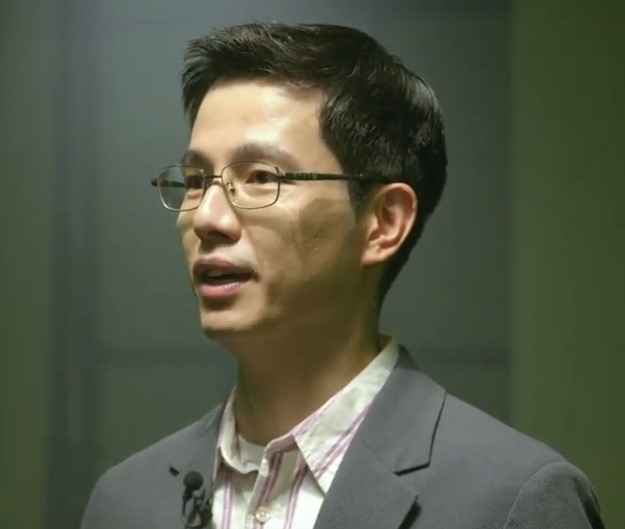
Yunho is an assistant professor at Korea University. His research interests focus on designing next-generation computing systems, including hardware and software for energy-efficient datacenters, processor architectures (CPUs, GPUs, and AI accelerators), memory systems, and system software.
Yunho was an assistant professor at SungKyunKwan University (SKKU). From 2019 to 2021, he was a postdoc in PARSA at EPFL (PI: Professor Babak Falsafi). He completed Ph.D. at Yonsei University (Advisor: Professor Won Woo Ro). From 2016 to 2017, Yunho worked as a visiting graduate scholar at the USC (Faculty Sponsor: Professor Murali Annavaram). From 2011 to 2014, He worked as a software engineer at Mobile Communications Buniness, Samsung Electronics.
Email: yunho_oh at korea dot ac dot kr
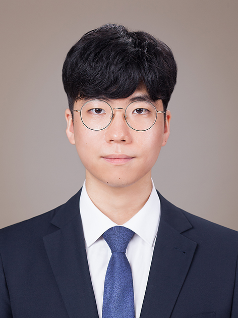
Sangun Choi
sangun_choi at korea dot ac dot kr
Website
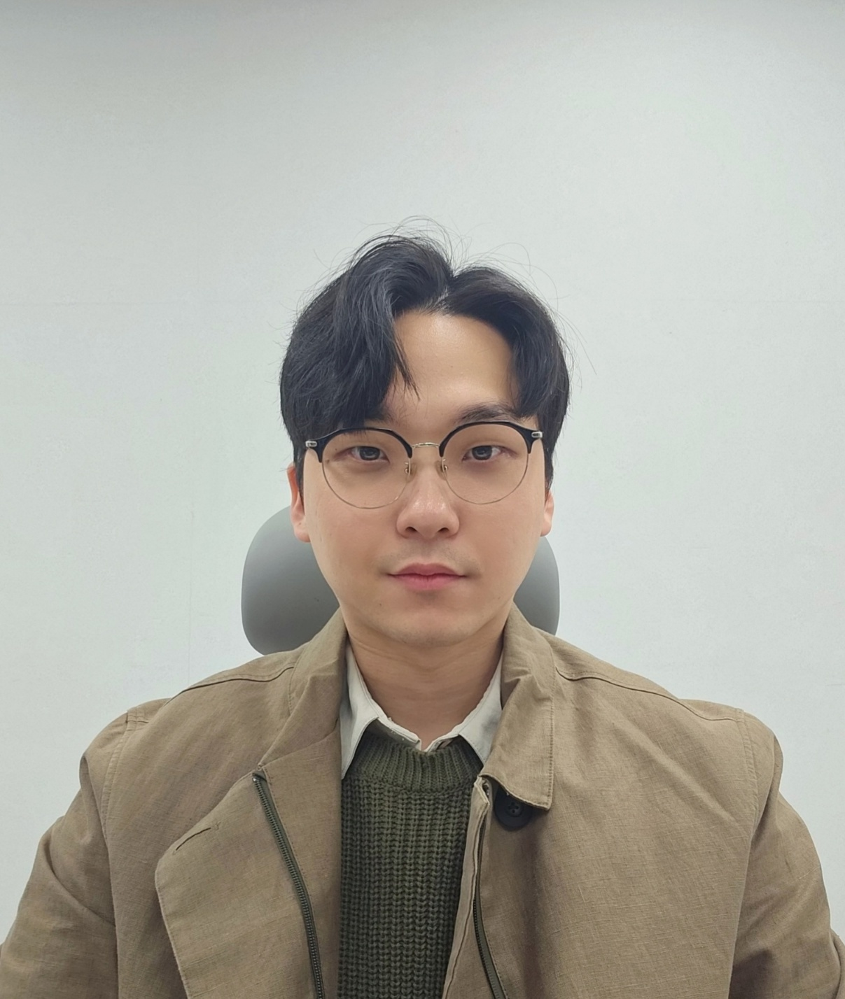
Jaebeom Jeon
414dragon at korea dot ac dot kr
Website
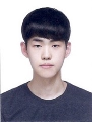
Jongmin Kim
jmkim99 at korea dot ac dot kr
Website
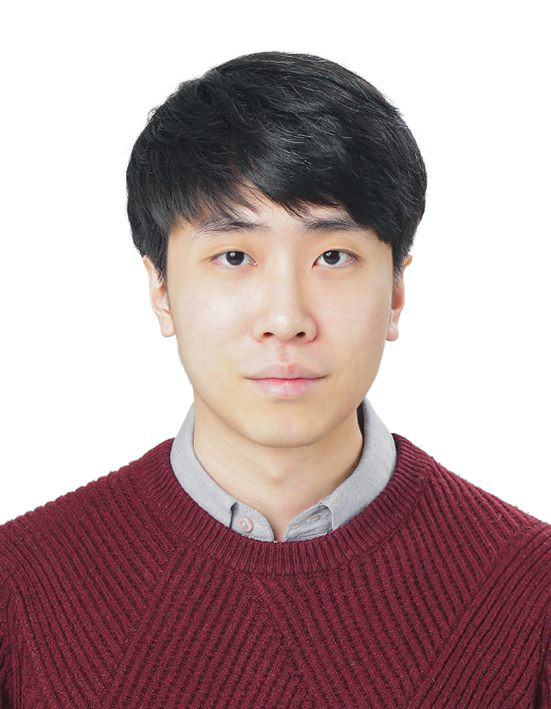
Jaeyong Park
jypark9818 at korea dot ac dot kr
Website
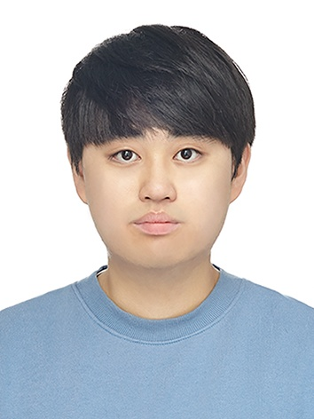
Minseong Gil
ms7859 at korea dot ac dot kr
Website
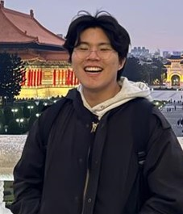
Sungsu Ahn
sungsu_ahn at korea dot ac dot kr
Website
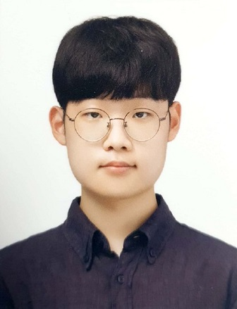
Dongwon Yang
yang2919 at korea dot ac dot kr
Website
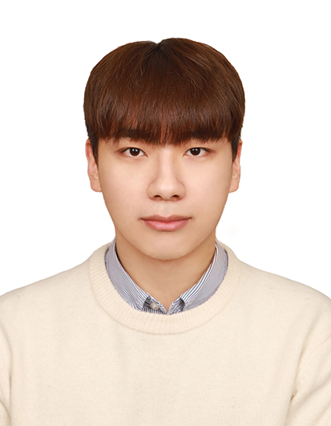
Kyungbin Kim
binbin10 at korea dot ac dot kr
Website
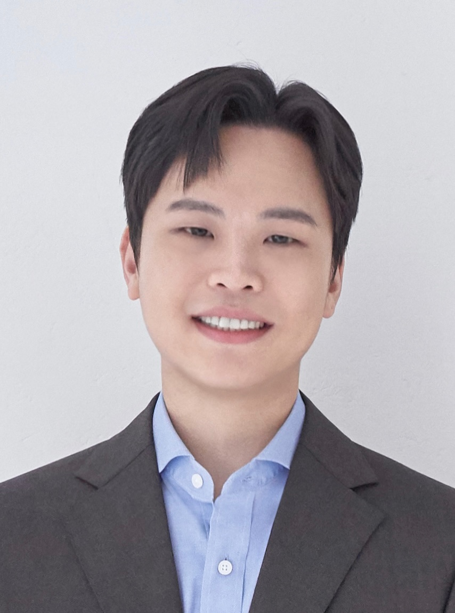
Kieun Park
kieunpark at korea dot ac dot kr
Website
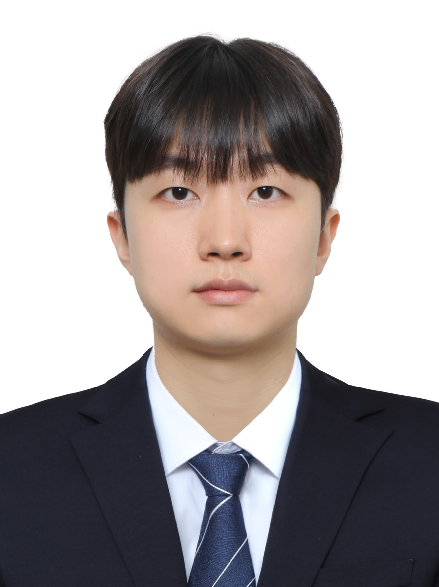
Wonjung Jeong
jwjand at korea dot ac dot kr
Website
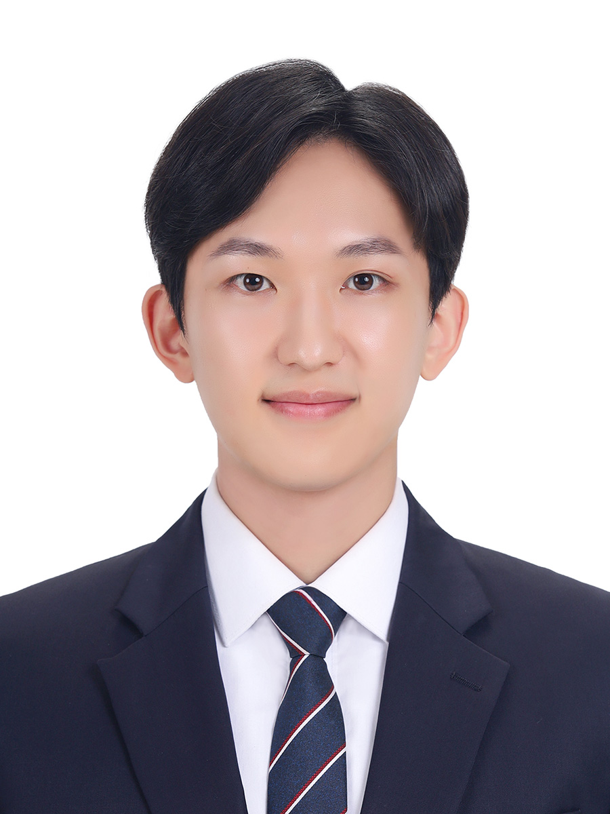
Yonghun Ryu
yonghun0626 at korea dot ac dot kr
Website